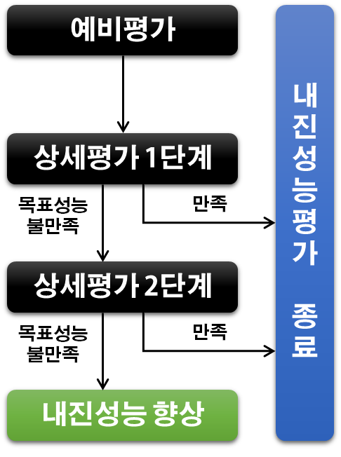
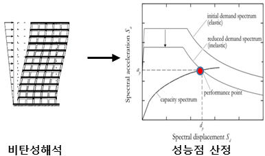
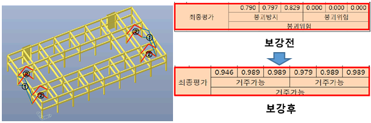

면진테이블
대한민국도 지진 안전지대가 아닙니다.
건축물의 내진성능평가와 그에 따른 보강도
이에스텍이 도와드리겠습니다.
내진성능평가 절차

예비평가
- 정형건물만이 예비평가 대상 (비정형 건물은 상세평가 실시)
- 시설안전공단에서 제시한 수식 적용
- 건물의 층별 성능 (Capacity) 산정
- 건물의 층별 요구치 (Demand) 산정
- 성능수준은 DCR= Demand/Capacity의 비에 따라 판정
| 성능수준 | DCR의 범위 | 비고 |
|---|---|---|
| 거주가능 (IO) | DCR ≤ 0.5 | |
| 인명안전 (LS) | 0.5 ＜ DCR ≤ 0.75 | 관공서 |
| 붕괴방지 (CP) | 0.75 ＜ DCR ≤ 1.0 | |
| 붕괴 (C) | 1.0 ＜ DCR |
상세평가 1단계
- 해석모델을 이용한 선형 (탄성)해석 실시
- 부재별 성능수준과 층별 성능수준을 바탕으로 전체 구조물 성능수준 판정
- 성능수준의 판정
| 성능수준 | 판정기준 |
|---|---|
| 거주가능 (IO) | 부재별 성능수준이 즉시거주인 부재가 연직하중 분담률 80% 이상 |
| 인명안전 (LS) | 부재별 성능수준이 인명안전, 즉시거주인 부재가 부담하는 연직하중 분담률 80% 이상 |
| 붕괴방지 (CP) | 부재별 성능수준이 붕괴방지, 인명안전, 즉시거주인 부재가 부담하는 연직하중 분담률 80% 이상 |
| 붕괴 (C) | 부재별 성능수준이 붕괴위험인 부재가 부담하는 연직하중 분담률 80% 이상 |
상세평가 2단계
- 해석모델을 이용한 비선형 해석 실시
- 성능점 (performance point)산정
- 성능점에서의 부재별 성능수준과 층별 성능수준을 바탕으로 전체 구조물 성능수준 판정
- 성능수준의 판정은 1단계 성능평가방법과 동일

내진성능 향상
- 최소 보강개소를 적용하여 상세평가 2단계 실시
- 목표성능 (인명안전) 만족 시 종료
- 목표성능 미 만족시 보강개소를 증가시켜 상세평가 2단계 실시
- 목표성능을 만족할 때까지 해석 반복 수행

이에스텍 면진테이블 특장점
-
경제성 및 품질확보
- 공장생산->현장설치로 시공성 우수
- 수업중단 없이 연중공사 가능
- 다양한 마감재 사용가능
(외장리모델링의 제약이 없음) - 기존외관의 변화가 거의 없음
- 건설폐기물 최소화
- 일반건물관리 외 유지보수관리비용 無
-
구조안전·효율성
- 모재와 동일한 물성치
- 기술인증으로 검증된 적합 공법
- PC 전단벽은 기존강성의 약 10배
- 취성거동특성을 고려한 내진보강
-
시공성 및 친환경성
- 단순 접합공정으로 현장품질 확보용이
- 공기 및 공사 비용 절감
- 수입 대체 효과